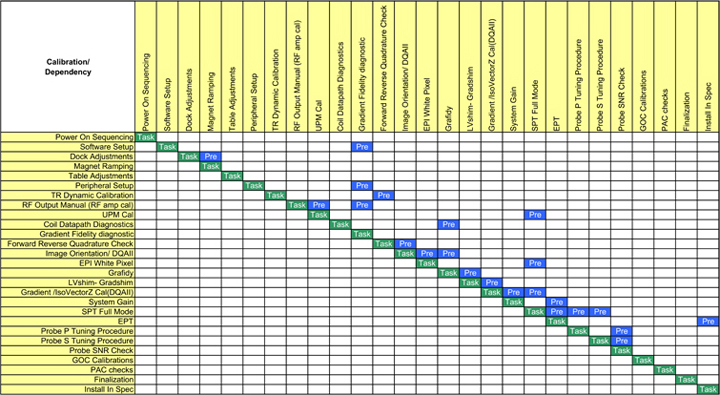
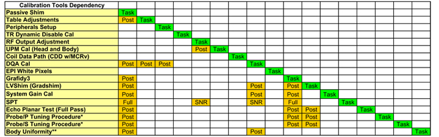

Illustration 4: Advancing Through Manual Items During Install

Illustration 2: Install Mode Dependency Matrix

Illustration 3: Maintenance Mode Dependency Matrix

| NOTE: | How to read the matrixes:
The same task calibrations are listed along the top and side. The ideal order of task calibration completion is from top to bottom. Example: If you need to perform the UPM Calibration task, find UPM Cal in the left column of Illustration 2. Follow that row across to the Task cell (in green). The task you need to perform before you can perform UPM cal is the RF Output Manual (RF Amp Cal) procedure – this prerequisite task is labelled Pre (and shown in blue). |
In Install mode, the ICW will not allow the user to perform a calibration the first time until all the necessary prerequisite tasks and calibrations are completed. Some calibration steps will have machine data. An example is LVShim data, which is stored in the /usr/g/service/data directory.
Other calibrations will not have machine data. For tests that have no machine data, verify the tasks were performed by clicking the box for each step, then clicking [Submit]. (See Illustration 4.)
Illustration 4: Advancing Through Manual Items During Install